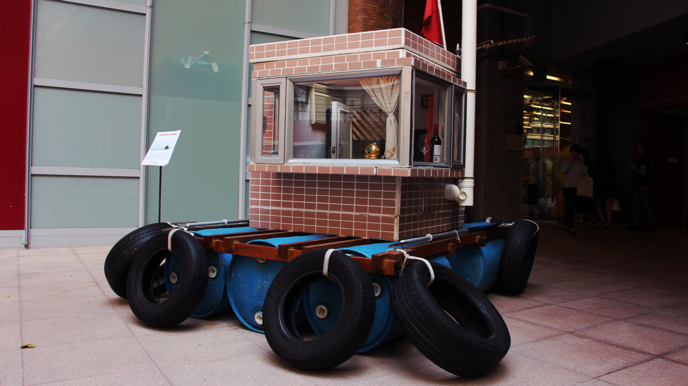
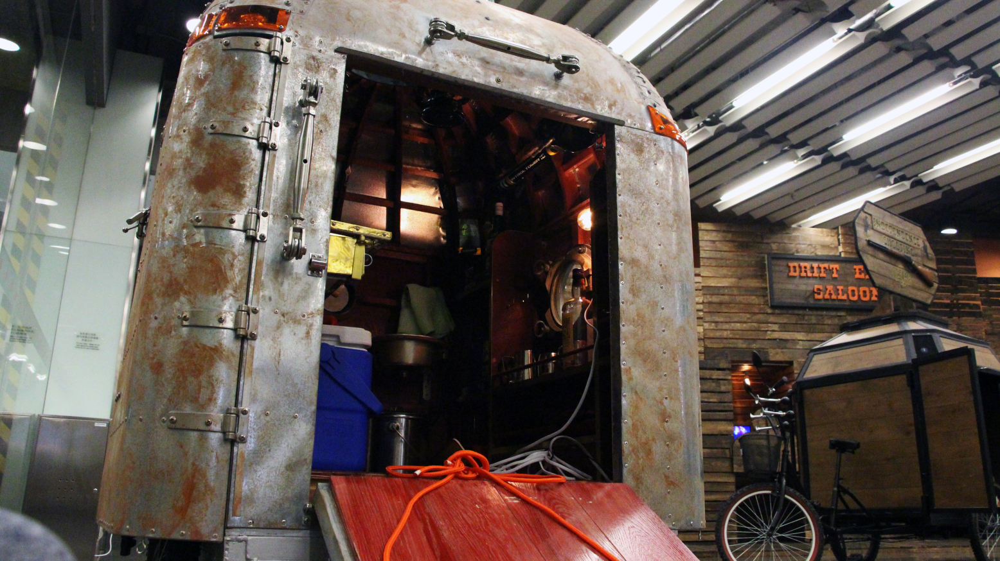
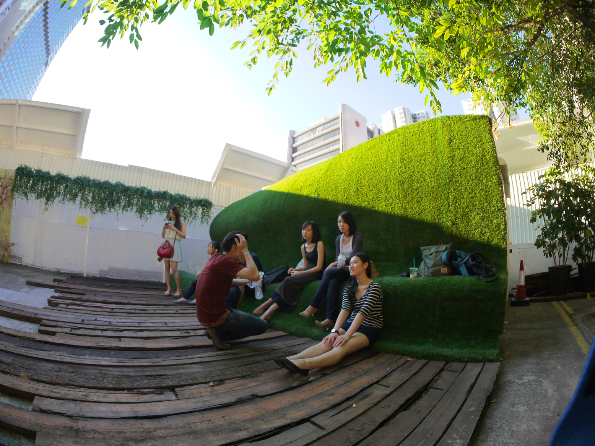
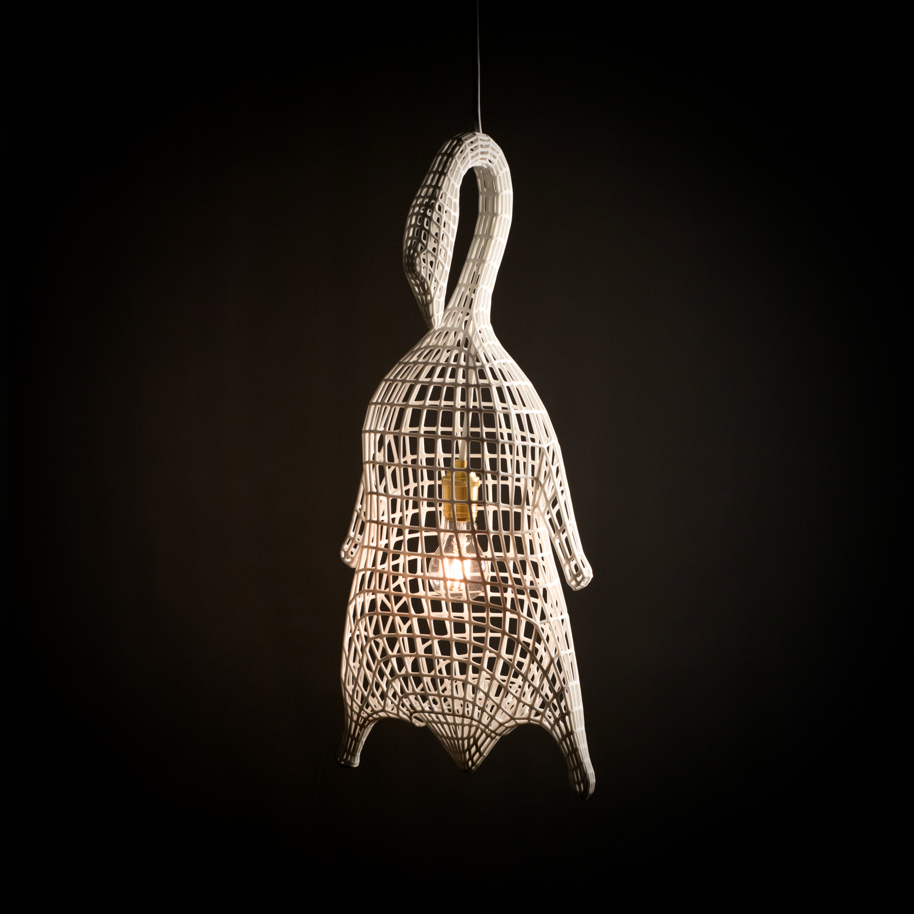

Commercial buildings will be the first thing that comes to our mind when it comes to architecture, however, the possibilities are endless.
Atelier J-AR (AJ-AR) is an architectural art group that promotes ideas relating to “juxta-architectural”. They aim to break the stereotype of architecture in Hong Kong by creating different forms of architecture, including art installation, video, and furniture.
One of the installations AJ-AR creates for an exhibition of Hong Kong Trade Development Council (HKTDC) is “Light Columns”. They made use of futile bamboos to produce a vertical floor lamp installation, focusing on inner beauty of bamboos.
“Architecture is the process of creation and it can be implied to any medium,” said Wyan Yeung Li-shung, one of the four founders of AJ-AR. “It should not be restricted to any scale or format,” he added.
“The process of generating ideas, making designs, finalizing details, and applying specific skills in making bamboo installation are the same as those in building constructions,” he said.
The interactive lawn installation in Oil Street art space, the nest-like bamboo pavilion in West Kowloon Waterfront Promenade, and the lighting installation in shape of a roasted goose displayed in The Hong Kong Architecture Exhibition 2015, are some of the examples of AJ-AR’s “juxta-architecture”.
“We want to make architecture closer to human. Architectures are not out of reach anymore that people can sit, touch, feel, and develop a close relationship with them,” Mr Wyan Yeung said.
For the founders, the importance of architectural art also contributes to their insistence on running a non-mainstream studio that doesn’t make great money. They believe juxta-architecture allows architectural art to develop in Hong Kong.
Angus Yip, another founder of AJ-AR, said that architectural art is important to a city because it could showcase the unique culture of Hong Kong.
“People would first know a city by its architecture. As an architect, I think all of us would like to create a special architectural language, which can showcase our local characters, just for Hong Kong architecture,” said Mr Yip.
Kacey Wong Kwok-choi, an artist and architect focusing on different social issues in Hong Kong, echoed that architectural art is important to present the culture of a city.
“Hong Kong Tourism Board doesn’t need to tell others what our culture is. People can feel it by walking in the city, appreciating the architecture nearby, and feeling the art surrounding them,” said Mr Wong, “we just need a better development in architectural art.”
Wong’s work “Paddling Home”, a four feet times four feet floating house with furnitures, such as television and air conditioner, is made to show the crazy property market and the poor accommodation in Hong Kong. The house was performed in the Victoria Harbor in 2009.
Another design by him, the “Wandering Home”, featuring the concept of mobile home and homeless issue in Hong Kong, was selected to represent Hong Kong in La Biennale di Venezia, an annually held international architecture exhibition.
With these social-connected works, he wants to perform another role of architecture in the society, apart from being functional.
“I think architecture is about humanity and its ultimate goal is to bring joy to the people,” he said, “the joy can be brought by factionalism of architecture, but it can also be brought by reflectiveness of architecture.”
He added that functionalism is over-emphasized in Hong Kong architecture industry in these days, while the humanity and art in architecture are undervalued.
“Even if you have an idea that is out of the box, it is hard to execute without the agreement from the developers or the clients. They would choose to follow the routine to reduce the cost and ensure the sales,” Mr Yip said.
Tieben Hendrik, director of the urban design program from the Chinese University of Hong Kong shares the same view that the industry is too commercial nowadays. He says architectures nowadays are less interesting than those build in early Hong Kong as they are built more for speculative market.
“Looking back to the buildings with incredible directness in 1950s to 1980s, they have attracted the best architects and photographers over the world,” he added.
Mr Hendrik also worries that creativity of the new generation in Hong Kong would be suppressed more severely.
“Every space is prepackaged and pre-organized, like the move you can do and the paint you can draw in a play area. What is the opportunity to create when there are no space that we can experience with?” he said.
 His floating house “Paddling Home” was being featured in Hong Kong & Shenzhen Bi-City Biennale of Urbanism and Architecture exhibition 2010. The house exaggerated the narrowness of a typical apartment in Hong Kong.  In the Hong Kong Food Truck Scheme, each truck costs over a million dollars. In response to the high cost of trucks and the fading of Hong Kong traditional food stalls, Kacey Wong created the eggette bar to trigger discussions.  The Green Dock is an interactive installation in the Oil Street art space. It allows the public to build connection with the nature through different senses.  Inspired by the traditional roasted goosey in Hong Kong Dai Pai Dong, AJAE creates this lighting installation to keep this fading culture alive.